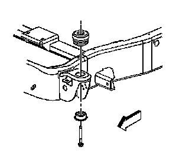
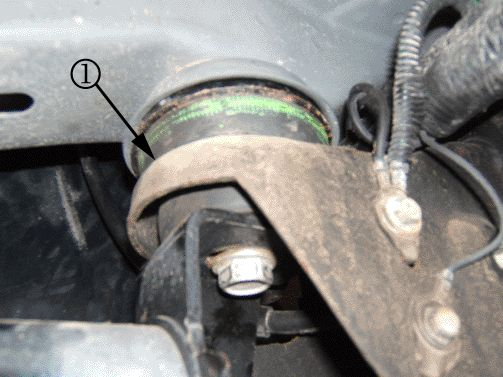
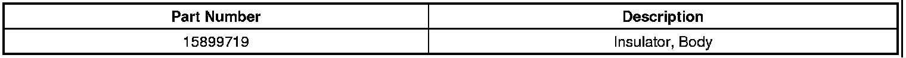
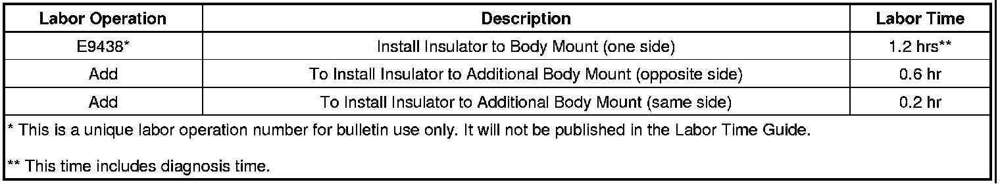

Body/Frame - Underbody Pop/Clunk When Turning
TECHNICALBulletin No.: 06-08-61-003F
Date: April 12, 2011
Subject: Underbody Pop or Clunk Type Noise While Turning or Driving on Uneven Road Surfaces (Install Body Mount Insulator)
Models:
2004-2012 Cadillac Escalade, Escalade ESV, Escalade EXT
2004-2012 Chevrolet Avalanche, Silverado (Classic), Silverado, Suburban, Tahoe
2004-2012 GMC Sierra (Classic), Sierra Denali (Classic), Sierra, Sierra Denali, Yukon, Yukon XL, Yukon Denali, Yukon Denali XL
Supercede:
This bulletin is being revised to update the model years. Please discard Corporate Bulletin Number 06-08-61-003E (Section 08 - Body and Accessories).
Condition
Some customers may comment on a pop or clunk type noise while turning or driving on uneven road surfaces. This noise can be heard and/or felt at either the driver's or front passenger floor pan area.
Cause
Under certain conditions, normal movement between the frame and the #1, #2 or #3 body mounts may cause this noise to occur.
Diagnosis
1. If the vehicle is equipped with aftermarket (non-GM Accessory) running boards or the running board is mounted using the body mount bolt, remove the running boards prior to test driving the vehicle. This will eliminate the running boards as the possible cause of the noise.
2. Install the J-39570 Chassis Ears to the frame rail at or near the body mounts.
3. Test drive the vehicle to identify which mount is suspect.
Correction
Install an insulator at the suspect mount(s). The insulator should be installed between the upper portion of the body mount and the frame bracket. The #1 mount is the mount located just under the A-pillar. The #2 mount is the mount located just under the B-pillar. The #3 mount is the mount located just under the C-pillar. Use the procedure listed below.
1. Raise the vehicle on the hoist. It is recommended to use a four-post lift or strap the vehicle frame to the hoist arms.
2. For the left side mounts only, remove the intermediate park brake cable. Perform the following steps:
1. Remove the nut from the park brake equalizer.
2. Remove the intermediate cable from the equalizer.
3. Depress the retaining tabs that secure the park brake cable to the frame.
4. Pull slightly on the cable from the mounting area in order to provide slack for body movement without binding the cable.
3. Remove all of the body mount bolts on the side being repaired.
4. Properly support the body at the body mount area.

Caution
When you remove the body mount, do NOT separate the frame from the body more than is necessary. Possible personal injury and damage to multiple parts may result.
5. Lower the chassis accordingly in order to remove the upper portion of the body mount.

6. Install the new insulator to the bottom of the top portion of the body mount. The picture shows the insulator (1) location after the body mount is reassembled.
7. Install the body mount to the frame bracket.
8. Perform the following procedure before installing the bolts.
1. Clean the bolt threads of all the original thread locking compound.
2. Clean the threads of the bolt with denatured alcohol or equivalent and allow to dry.
3. Apply Threadlocker, GM P/N 89021297 (In Canada, use P/N 10953488).
9. Install the body mount bolts.
Tighten
For 2003, 2004 and 2005 model year, tighten the bolts to 85 Nm (63 lb ft).
Tighten
For 2006-2012 model year, tighten the bolts to 100 Nm (74 lb ft).
10. Reinstall the intermediate park brake cable (left side only).
Parts Information

Warranty Information

For vehicles repaired under warranty, use the table.

Disclaimer